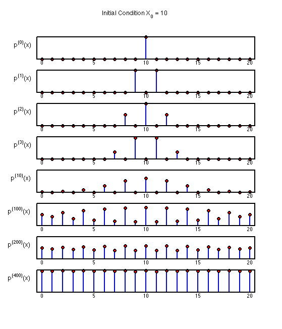
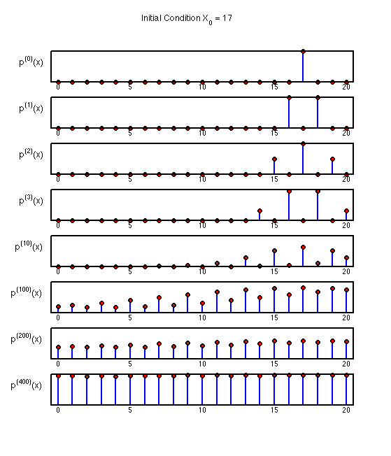

Perform a random walk on the integers 0:20
Visualize the probability of the the states for various time steps, and different initial conditions.
% This file is from pmtk3.googlecode.com function randomWalk0to20Demo
T = diag(repmat(0.5, 1, 20), -1) + diag(repmat(0.5, 1, 20), 1);
T(1, 1) = 0.5; T(21, 21) = 0.5;
plotPoints = [1, 2, 3, 10, 100, 200, 400];
sp = @(x)subplot(numel(plotPoints)+1, 1, x+1);
p0_a = zeros(1,21); p0_a(11) = 1;
p0_b = zeros(1,21); p0_b(18) = 1;
p0 = {p0_a, p0_b};
for i=1:numel(p0)
figure; hold on; sp(0); stemPlot(p0{i},0); for j=1:numel(plotPoints) N = plotPoints(j); sp(j); stemPlot(p0{i}*(T^N),N); end set(gcf,'Position',[sub(get(gcf,'Position'),1),50,sub(get(gcf,'Position'),3), sub(get(0,'ScreenSize'),4)-125]); x0 = find(p0{i})-1; suptitle(sprintf('Initial Condition X_0 = %d',x0),12); printPmtkFigure(sprintf('randomWalk%d', x0)); 
end
function stemPlot(pn,titleNum) h = stem(pn); hold on; set(h,'MarkerFaceColor', 'red', 'MarkerEdgeColor', 'black', 'LineWidth',2); h = stem(pn); set(h,'MarkerFaceColor', 'red', 'MarkerEdgeColor', 'black', 'LineWidth', 2, 'LineStyle', 'none'); ylabel(sprintf('p^{(%d)}(x)', titleNum), 'FontSize', 12, 'Rotation', 0, 'HorizontalAlignment', 'right'); set(gca,'YTick', [], 'LineWidth', 2, 'TickLength', [0,0], 'XLim', [0.5,21.5], 'XTick', 1:5:21, 'XTickLabel', {'0','5','10','15','20'}); end
end